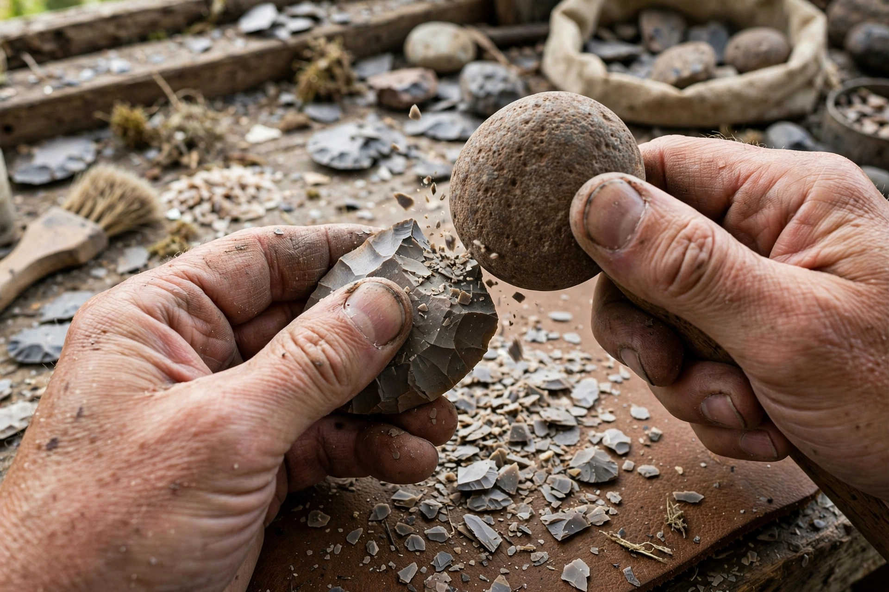

Knapping is the shaping of a lithic material — such as flint, chert, obsidian, or other conchoidally fracturing stone — through the process of lithic reduction, striking off flakes to form a stone tool or the flat faces of stone in building or gunflints. It was practised by early hominins for over three million years and remains a craft and experimental-archaeology technique today.
Knapping exploits conchoidal fracture: a strike near the edge of a core initiates a cone of force that detaches a flake with a characteristic bulb of percussion. Skilled knappers control flake size and shape by choosing the striking platform, angle, and force.
Hard hammer percussion uses a stone hammer for coarse shaping, as in the Oldowan and Acheulean industries. Soft hammer percussion uses antler, bone, or wood billets to thin and shape tools such as the Acheulean hand axe. Pressure flaking, applying steady pressure with a pointed tool, allows fine retouch of points and blades, used masterfully in Solutrean and Clovis lithics. The Levallois technique prepared cores to predetermine flake shape.
Fine-grained, brittle stones with no cleavage planes are preferred: flint, chert, obsidian, jasper, chalcedony, and quartzite. Obsidian produces the sharpest edges — sharper than surgical steel — and was traded over long distances in prehistory.
Today knapping is used to replicate prehistoric tools in experimental archaeology, to produce gunflints, and as a heritage craft; the waste flakes (debitage) it produces are a key source of archaeological data.